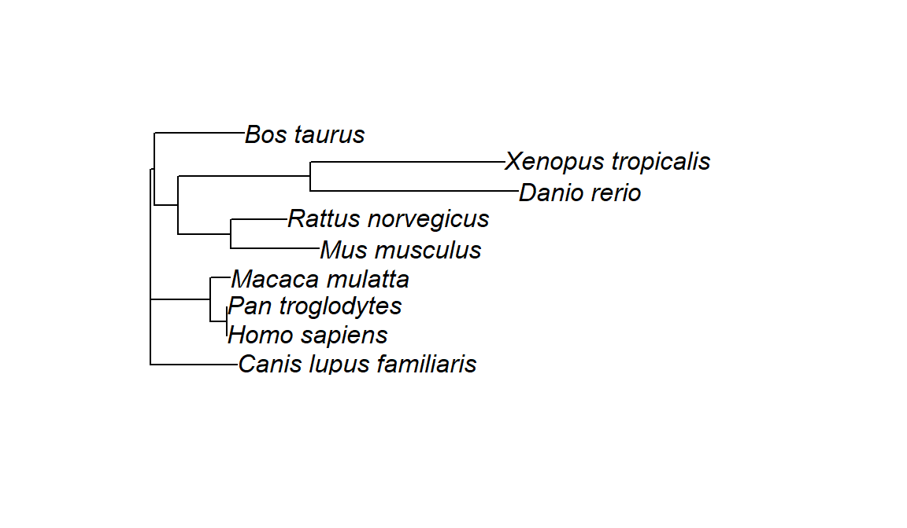
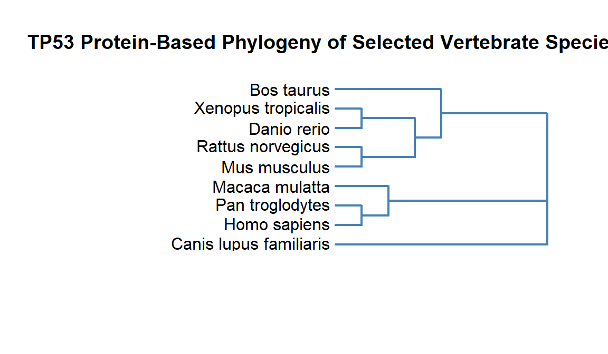

query <- "TP53[gene name] AND gene homologene[filter]"Building a Bioinformatics Workflow
In this section, we will work through an entire workflow for finding protein sequences, aligning them, and using that alignment to create a phylogenetic tree.
Getting protein sequences with rentrez
We previously looked for the nucleotide sequence for the human TP53 gene. Our goal in this lesson will be to find orthologs of that gene. An ortholog is a gene in different species that evolved from a common ancestral gene through speciation and typically retains the same function.
First, let’s build our query to use in entrez_search(). You can write the query directly in the term argument of the function, but sometimes it can be cleaner to create a separate object to store your query. Especially if it is a more complicated one. We’re going to use the gene homologene filter to look for our homologous sequences.
Now let’s add that query to our search
tp53_homologs <- entrez_search(db="gene",
term = query)Our search returned 9 ids for homologous genes
tp53_homologs$ids[1] "7157" "22059" "24842" "30590" "403869" "281542" "716170" "431679"
[9] "455214"Before fetching any sequences, let’s take a closer look at some metadata for these records with the function entrez_summary()
search_summ <- entrez_summary(db="gene",
id=tp53_homologs$ids)The summary object is another list, with an element for each id, and each of those elements contains metadata fields, some of which have more nested metadata fields. The original records are stored in Entrez as XML files. XML is a hierarchical data structure, and in R those kinds of structures are represented as lists.
To make it simpler to navigate this nested structure, we can use the function extract_from_esummary() to pull out one or more fields to look at.
extract <-
extract_from_esummary(search_summ,
elements = "organism",
simplify = TRUE)The extract returns a matrix, another important R data structure. With a little work, we can turn the matrix into a more familiar looking data frame. Matrices are two dimensional like data frames (i.e. they have columns and rows), but the data must be homogenous (of the same type). Note that a matrix has named columns and rows.
First we can transpose the columns and rows with t(), so that the fields are columns and the rows are records.
t_extract <- t(extract)Now we can try to coerce this transposed matrix to a tibble with the as_tibble function. This still maintains the uids as rownames, so we can use the rownames= argument to put those rownames in a new column called uid. We now have a tibble of list-columns. Most of the columns are actually lists. We can use unnest() to turn them into regular data frame columns.
df <- as_tibble(t_extract, rownames = "uid") %>%
unnest(cols = everything())Let’s use entrez_link() to find links from these ids in the Protein database which contains amino acid sequences.
protein_links <- entrez_link(dbfrom = "gene",
id = df$uid,
db="protein")This found 58 sequences in the protein_refseq collection. Let’s use entrez_summary again to get an overview of what these sequences are.
link_summary <- entrez_summary(db="protein",
id=protein_links$links$gene_protein_refseq)And extract_from_esummary() to view these elements more easily.
link_extract <-
extract_from_esummary(link_summary,
elements = c("uid", "caption", "slen", "organism"))link_df <- as_tibble(t(link_extract)) %>%
unnest(cols = everything())We see now that our search returned multiple protein sequences for some species. For our analysis, we want just one sequence per species. So we can group our data frame by organism, and then sort by the caption (accession number) and sequence length (slen). Finally we use the slice() function to pull out just the first row of each group.
A note about RefSeq accession numbers
The RefSeq accession number naming scheme from NCBI uses prefixes to indicate the type and status of the sequence record. For example:
| Prefix | Type of Sequence | Source | Description |
|---|---|---|---|
| NM_ | mRNA | Curated | A manually reviewed and curated transcript (messenger RNA). |
| NP_ | Protein | Curated | A protein sequence derived from an NM_ transcript. |
| NC_ | Genomic DNA | Curated | A reference genomic contig or chromosome. |
| NG_ | Genomic region | Curated | A curated genomic region (e.g., a gene with its regulatory elements). |
| XM_ | mRNA | Predicted (Model) | A computationally predicted transcript (not manually reviewed). |
| XP_ | Protein | Predicted (Model) | A protein sequence derived from an XM_ transcript. |
- NM_ and NP_ always go together — NM_ is the transcript, NP_ is the corresponding protein.
- XM_ and XP_ serve the same function as NM_ and NP_, but are generated through computational predictions (often for less well-characterized organisms or isoforms).
- NC_ and NG_ are genomic-level references, where NC_ is often a whole chromosome and NG_ might cover a specific gene region with context.
When we select our species, we want to choose NP_ sequences when possible over the predicted XP_ sequences. We will also choose the longest sequence available.
one_per_species <- link_df %>%
group_by(organism) %>%
arrange(caption, desc(slen), .by_group = TRUE) %>%
dplyr::slice(1)Now we have ids for 9 protein sequences, so we can retrieve them with entrez_fetch.
tp53_fasta <- entrez_fetch(db = "protein",
id = one_per_species$uid ,
rettype = "fasta")cat(tp53_fasta)Finally, let’s save our sequences to a fasta file.
writeLines(tp53_fasta, "data/tp53_orthologs.fasta")Pairwise Alignment
Now we can start to compare our sequences with each other. First let’s compare just two sequences.
We can use Biostrings again to import our fasta file. This time, since we’re working with proteins, we’ll use the function readAAStringSet()
Our AAStringSet object now contains multiple sequences. We can access them with bracket notation.
orthologs <- readAAStringSet("data/tp53_orthologs.fasta")
orthologs[1] #look at first sequenceAAStringSet object of length 1:
width seq names
[1] 386 MEESQAELNVEPPLSQETFSDLW...SKKRPSPSCHKKPMLKREGPDSD NP_776626.1 cellu...orthologs[2] #look at second sequenceAAStringSet object of length 1:
width seq names
[1] 381 MQEPQSELNIDPPLSQETFSELW...AKKGQSTSRHKKLMFKREGPDSD NP_001376147.1 ce...One thing that will make our analysis more readable is if we clean up the names for each sequence. The names are derived from the header row of each sequence in fasta format.
names(orthologs)[1] "NP_776626.1 cellular tumor antigen p53 [Bos taurus]"
[2] "NP_001376147.1 cellular tumor antigen p53 [Canis lupus familiaris]"
[3] "NP_001258749.1 cellular tumor antigen p53 isoform 1 [Danio rerio]"
[4] "NP_000537.3 cellular tumor antigen p53 isoform a [Homo sapiens]"
[5] "NP_001040616.1 cellular tumor antigen p53 [Macaca mulatta]"
[6] "NP_001120705.1 cellular tumor antigen p53 isoform b [Mus musculus]"
[7] "XP_001172077.2 cellular tumor antigen p53 isoform X2 [Pan troglodytes]"
[8] "NP_001416922.1 cellular tumor antigen p53 isoform a [Rattus norvegicus]"
[9] "NP_001001903.1 cellular tumor antigen p53 [Xenopus tropicalis]" We can clean the names to get just the organism name. This will be useful later when we build our phylogenetic tree. To do this, we will use the stringr package from the tidyverse along with regular expressions. Regular expressions (or regex) are a concise language for describing patterns in strings.
Regex metacharacters
| Symbol | Meaning | Example | Description | ||
|---|---|---|---|---|---|
. |
Any single character (except newline) | "a.b" matches acb, arb |
Dot matches any character | ||
* |
0 or more of the preceding item | "ab*c" matches ac, abc, abbc |
Matches zero or more occurrences | ||
+ |
1 or more of the preceding item | "ab+c" matches abc, abbc but not ac |
Matches one or more occurrences | ||
? |
0 or 1 of the preceding item | "ab?c" matches ac, abc |
Matches zero or one occurrence | ||
^ |
Start of string | "^a" matches apple but not banana |
Anchors the pattern to the beginning of the string | ||
$ |
End of string | "e$" matches apple but not elephant |
Anchors the pattern to the end of the string | ||
[] |
Character class | "[abc]" matches a, b, or c |
Matches any one of the listed characters | ||
[^] |
Negated character class | "[^abc]" matches any character except a, b, or c |
Excludes characters | ||
| |
Alternation (OR) | "cat|dog" matches cat or dog |
Matches either the expression before or after the pipe | ||
() |
Grouping or capturing | "(ab)+" matches abab |
Groups elements or captures for back-referencing | ||
{n} |
Exactly n times | "a{3}" matches aaa |
Matches exactly n repetitions | ||
{n,} |
At least n times | "a{2,}" matches aa, aaa, etc. |
Matches n or more repetitions | ||
{n,m} |
Between n and m times | "a{2,4}" matches aa, aaa, aaaa |
Matches between n and m repetitions | ||
\\ |
Escape character | "\\." matches . literally |
Escapes special characters |
Greedy vs Lazy Quantifiers
| Pattern | Description | Greedy? | Example Match |
|---|---|---|---|
.* |
Any character, 0+ times | Yes | Matches from first < to last > |
.*? |
Any character, 0+ times | No | Matches just <tag> |
.+ |
Any character, 1+ times | Yes | As much as possible |
.+? |
Any character, 1+ times | No | As little as possible |
names(orthologs) <- names(orthologs) %>%
str_extract(pattern = "\\[.*?\\]") %>% #extract all words enclosed in brackets
str_replace_all(pattern = "\\[|\\]",
replacement = "") #remove bracketsLet’s do a pairwise alignment of the first two sequences in our orthologs object using the pwalign package.
align_hs_mm <-
pwalign::pairwiseAlignment(orthologs[1], orthologs[2])To summarize that alignment, we can get the percent identity with the pid() function.
pwalign::pid(align_hs_mm)[1] 79.79275Multiple Sequence Alignment
To align all of our sequences, we’ll use the DECIPHER package.
msa <- AlignSeqs(orthologs)We can view this more clearly in the browser.
BrowseSeqs(msa)Building a Phylogenetic Tree
Now that we have our alignment, we need to calculate a distance matrix. This will be used to construct our tree.
dist <- DistanceMatrix(msa)================================================================================
Time difference of 0 secsThe ape package allows you to construct trees. We’ll use the Neighbor Joining algorithm.
tree <- nj(dist)Finally, we can plot our tree, using a variation of base Rplot(). plot.phylo() requires an object of class phylo, which we created
plot.phylo(tree)
There are several ways you can customize your plot. Here are some examples: | Argument | Description | Example | | —————– | —————————————————————————- | ————————————- | | type | Tree layout: "phylogram", "cladogram", "fan", "unrooted", "radial" | plot(tree, type = "fan") | | direction | Direction: "rightwards", "leftwards", "upwards", "downwards" | plot(tree, direction = "downwards") | | use.edge.length | Use branch lengths (TRUE) or equal lengths (FALSE) | plot(tree, use.edge.length = FALSE) | | show.tip.label | Show/hide tip labels | plot(tree, show.tip.label=FALSE) | | cex | Font/label size | plot(tree, cex=0.8) | | label.offset | Space between labels and tree | plot(tree, label.offset=0.01) | | no.margin | Remove plot margins | plot(tree, no.margin=TRUE) | | edge.width | Line thickness | plot(tree, edge.width=2) | | edge.color | Color of edges | plot(tree, edge.color="blue") |
We can also use the title() function to add a title.
plot.phylo(tree,
label.offset = 0.2,
direction = "left",
edge.width = 2,
edge.color = "steelblue",
font = 1,
use.edge.length = FALSE)
title(main = "TP53 Protein-Based Phylogeny of Selected Vertebrate Species")